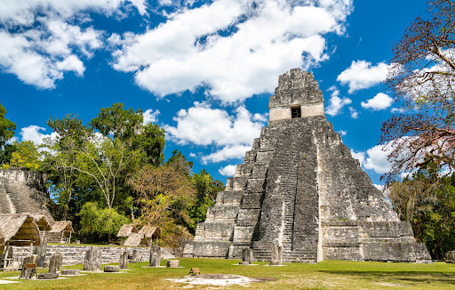

Parque nacional Tikal
Con 16 km², la antigua ciudad Maya de Tikal es debido a sus riquezas culturales y naturales
de un valor universal excepcional y fue declarado como el primer sitio Patrimonio Mundial Cultural y Natural de la humanidad en 1979 por la UNESCO.
La antigua ciudad Maya de Tikal, ubicada en el municipio de Flores, departamento de Petén,
constituye el asentamiento prehispánico más extenso en Guatemala,
cuya población pudo haber alcanzado los 100,000 habitantes durante su época de mayor esplendor.
Tikal cuenta con alrededor de 5,000 edificios prehispánicos en un área de aproximadamente 16 km²,
de los cuales únicamente el 5% se encuentra restaurado y habilitado para su visitación.
La ciudad representa una antigua capital que dominó un vasto territorio durante el período Clásico.
El nombre de Tikal significa Ciudad de las Voces. El Parque Nacional Tikal fue creado
en 1955 con una extensión de 575.86 km² (55,005 ha).
Tikal se caracteriza por la monumentalidad de sus edificios, con una ocupación continua de 1,500 años (del 600 a.C. al 900 d.C.),
época durante la cual ejerció un papel protagónico en la organización social
y política de las tierras bajas. Tikal es uno de los máximos exponentes del estilo arquitectónico típico de
las tierras bajas centrales mayas, mostrando exquisitos ejemplos de templos
en forma de pirámides escalonadas tales como, el Gran Jaguar (Templo I),
el Templo de las Máscaras (Templo II), el Templo de la Serpiente Bicéfala (Templo IV) y el Templo de las Inscripciones (Templo VI),
así como plazas, conjuntos conmemorativos del Mundo Perdido, juegos de pelota,
complejos de pirámides gemelas, una enorme colección de monumentos tallados y gran cantidad de sitios periféricos a su alrededor.
Tikal presenta una larga secuencia histórica relatada en sus estelas y altares con una sucesión directa de la dinastía real.
Debido a sus riquezas culturales y naturales de valor universal
excepcional, en 1979 fue declarado por la UNESCO como el primer sitio Patrimonio Mundial Cultural
y Natural de la Humanidad, con una muestra significativa de selva subtropical
húmeda, hábitat de numerosas especies de flora y fauna.
En la actualidad, Tikal es uno de los destinos turísticos más importantes de Guatemala
y uno de los sitios de mayor interés para los observadores de aves.
